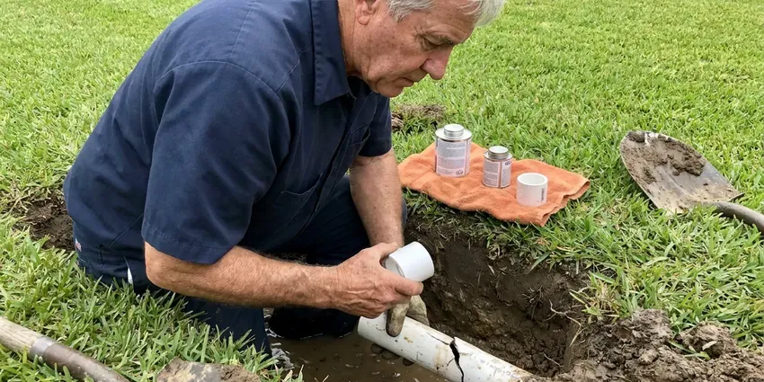

Sewer Line Inspection in Wheaton, IL
HVM Plumbing provides thorough sewer line inspection services throughout Wheaton, IL, identifying hidden issues before they become major repairs.
- Same-Day Camera Inspections
- Preventative Maintenance
- Pre-Purchase Inspection Reports
- Depth and Location Markings

Get Your Sewer Line Inspected in Wheaton, IL.
Call now to schedule a camera inspection and get a recorded video of your sewer line.
Sewer Line Inspection in Wheaton, IL With HD Camera Video and Clear Reports
HVM Plumbing inspects sewer lines by feeding a waterproof HD camera on a push cable through a cleanout or roof vent. The camera records the full length of the line, and a built-in sonde transmitter lets us mark the location and depth of any problem from above ground.
Our expertise includes:
- Identifying root intrusion and pipe deterioration.
- Locating and mapping underground pipe damage.
- Locating exact pipe damage points

Additional Plumbing Maintenance Services in Wheaton, IL
Our maintenance and specialty plumbing services in Wheaton, IL protect your home year-round and extend the life of every system.


Customers
Why Choose HVM Plumbing for Sewer Line Inspection in Wheaton, IL?
Proactive sewer line inspection can save you significant time and money by catching small issues before they escalate into costly repairs. It is an essential part of maintaining a healthy plumbing system.
- Property Protection, Early detection of leaks or blockages prevents water damage to your home and yard.
- Preventative Care, Regular inspections can catch small issues before they escalate into major, expensive sewer line failures.
- Clear Video, High-definition footage shows cracks, roots and offsets clearly.
Citywide Coverage
From the busy downtown to the quiet suburban streets, our plumbing experts cover all of Wheaton for detailed sewer line inspections. We are your local choice for dependable plumbing diagnostics.
Experienced Team
Our plumbing technicians are extensively trained in current sewer camera inspection techniques and equipment. They have years of experience identifying a wide range of sewer line issues found in Illinois, from root intrusion to cracked pipes caused by soil movement.
Safety-First Approach
All sewer line inspections conducted by HVM Plumbing are performed with the highest regard for safety and environmental responsibility. We make sure our methods are non-invasive and meet all industry standards, safeguarding your home and the local plumbing infrastructure.
Trusted Certified Wheaton Plumbing Services Professionals
At HVM Plumbing, we take pride in providing licensed, certified plumbing services throughout Wheaton, IL. Backed by recognized industry credentials, our experienced plumbers combine technical skill with genuine customer care. Whether it is repair, installation, or maintenance, we follow strict safety and quality standards to deliver long-lasting results you can trust.
Call Us Now PHCC Plumbing Contractor Recognition
PHCC Plumbing Contractor Recognition Better Business Bureau (BBB) Accreditation
Better Business Bureau (BBB) Accreditation Angi Certified Pro
Angi Certified Pro ISO 9001 Quality Management Certification
ISO 9001 Quality Management CertificationAdvanced Sewer Line Inspection Services in Wheaton, IL
Post-Clearing Sewer Camera Inspection in Wheaton
After a backup is cleared, a camera inspection shows why it happened. It might be grease, roots, a broken section or an object stuck in the line. Knowing the cause helps you avoid repeat backups. We often recommend an inspection after any main line clearing.

Preventative Maintenance Inspections in Wheaton
Scheduling regular preventative maintenance sewer line inspections can extend the life of your plumbing system and avoid surprise emergencies. For homes in Wheaton, especially those with aging infrastructure or large trees, an annual inspection can identify minor issues like grease buildup or small cracks before they become major ruptures. This proactive approach saves you money and stress in the long run, keeping drains running smoothly year-round.
Belly and Offset Detection in Wheaton, IL
A belly is a low spot where the pipe has sagged and holds water and waste. Offsets happen when pipe sections shift out of alignment, often because of soil movement. Clay soil shifts as it wets and dries, which can crack clay sewer pipes and let tree roots find their way inside. The camera shows these defects clearly, and we mark their location for repair.
Preventative Sewer Line Inspections in Wheaton, IL
Proactive maintenance is the best defense against major sewer line disasters. For homes and businesses in Wheaton, IL, especially those with older plumbing or significant landscaping, regular preventative sewer line inspections can catch minor issues before they become emergencies. We can identify early signs of root intrusion, minor cracks or sediment buildup, allowing for early intervention and extending the life of your sewer system.
Detecting Pipe Damage and Corrosion in Wheaton, IL
Sewer lines can suffer from many forms of damage, including cracks, breaks, corrosion and sagging sections due to shifting soil. Our camera inspections provide a detailed visual assessment of the pipe's interior, identifying these structural issues. We can determine the severity and exact location of damage, helping you decide between spot repair, relining or full pipe replacement. Early detection is key to preventing catastrophic failures.
Post-Repair Sewer Inspections in Wheaton, IL
After a sewer line repair or replacement, a post-repair inspection is important to verify the quality of the work. HVM Plumbing can conduct an independent inspection to confirm that the new pipes are correctly installed, connections are secure and there are no remaining issues or debris. This provides assurance that the repair was successful and meets all the necessary plumbing standards in Wheaton, IL.
Root Intrusion Detection in Wheaton, IL
Tree roots are a common problem for sewer lines, especially with the mature trees found in many Wheaton neighborhoods. Roots seek out moisture and can infiltrate even tiny cracks in pipes, growing and eventually causing severe blockages or pipe damage. Our high-resolution cameras clearly show root masses, allowing us to recommend appropriate solutions like hydro-jetting or pipe repair. We use professional locators to mark the precise spot above ground.

Sewer Scope for Slow Drains in Wheaton
If you are experiencing consistently slow drains or recurring clogs, a sewer scope inspection can pinpoint the exact cause. Instead of guessing, our camera can show whether the issue is a simple blockage, a pipe belly or more serious damage like a collapse. This precise diagnosis in Wheaton allows us to recommend the most effective and least invasive repair, saving you from unnecessary digging or repeated efforts.
Sewer Line Inspection Near Me in Wheaton, IL
When you search for 'sewer line inspection near me' in Wheaton, IL, you want a local company that understands the plumbing challenges of the area. HVM Plumbing is your trusted local expert, equipped with the knowledge and tools to quickly respond to your needs. We are familiar with the many types of sewer systems found throughout Wheaton.
Our team is always ready to send skilled plumbers to your location for a prompt and thorough sewer line inspection. We pride ourselves on being a dependable 'near me' plumbing solution, offering efficient service and clear communication. Don't hesitate to reach out to HVM Plumbing for prompt assistance with your sewer line concerns.
HVM Plumbing at a Glance
- Licensed and insured plumbers serving Wheaton, IL
- Same-day appointments and 24/7 emergency response
- Clear written estimates, no hidden fees
- 4.8-star rated by 528+ Illinois customers
Wheaton Map
Wheaton Information
- Population
- 52,938
- Area codes
- 630/773/847
- Service area
- Wheaton and communities within 40 miles
- Nearby
- Downers Grove, Naperville, Aurora, Bolingbrook
Shifting soil and foundation movement can stress buried pipe, so regular sewer line inspections help Wheaton, IL homeowners catch pipe damage early and prevent costly future repairs. Clay soil shifts as it wets and dries, which can crack clay sewer pipes and let tree roots find their way inside.
Expert Services
Trust our professionals for reliable HVM Plumbing solutions in Wheaton, IL.
Our Specialized Plumbing Services in Wheaton, IL
At HVM Plumbing, we provide a complete range of plumbing services across Wheaton, IL. From leak detection to full system installations, our team ensures fast, precise, and affordable service for both residential and commercial properties. Explore our core services below:


Here Is How Our Sewer Line Inspection Process Works in Wheaton, IL
HVM Plumbing uses a step-by-step approach for every sewer line inspection, delivering a thorough and accurate assessment for our Wheaton, IL customers.
Request a Quote
Contact HVM Plumbing by calling (773) 903-7643 or filling out our online form to schedule your sewer line inspection. We'll discuss your concerns and set up a convenient time for our team to visit your property.
Camera Insertion
Our skilled technician will insert a high-resolution, waterproof camera into your sewer line, usually through a clean-out access point. The camera is maneuvered through the pipes, transmitting live video footage to a monitor above ground.
Detailed Analysis
We carefully observe the video feed for any signs of damage, blockages, root intrusion, corrosion or other anomalies. Our equipment also allows us to pinpoint the exact location and depth of any identified issues.
Frequently Asked Questions About Sewer Line Inspection in Wheaton
The cost of a sewer line inspection in Wheaton, IL typically ranges from $200 to $500. This price can vary based on the length of the line, accessibility and the complexity of the plumbing system. Factors like emergency service or detailed mapping can influence the final cost.
We use professional HD push cameras from manufacturers like RIDGID and other leading brands, with built-in sondes for locating. Our cameras record video and capture still images. This equipment works in lines from 2 to 8 inches wide.
A sewer camera inspection can detect a wide range of issues including tree root intrusion, cracks or breaks in pipes, corrosion, misaligned pipes, blockages from grease or debris, sagging pipe sections and even lost valuables. It provides a detailed visual of the pipe's interior condition.
If problems are detected, our technician will explain the issues clearly and provide you with a detailed estimate for the necessary repairs. We will go over the best solutions, whether it's hydro-jetting for blockages, trenchless repair or traditional excavation, tailored to your specific situation and budget.
We use high-quality waterproof sewer cameras, often from brands like RIDGID or MyTana. These cameras are equipped with powerful LED lights and self-leveling heads to provide clear, high-definition video footage of the pipe's interior, even in dark or wet conditions.
While DIY sewer cameras are available, professional sewer line inspections offer better results. Our plumbers have specialized training to interpret the video footage accurately, identify subtle issues and understand local plumbing codes, providing a more reliable diagnosis and solution.
HVM Plumbing relies on industry-leading sewer camera equipment from trusted brands like RIDGID and Vivax-Metrotech. These professional-grade cameras offer excellent image quality, durability and accurate locating capabilities, so we get the clearest picture of your sewer line's condition.
Multiple slow drains, gurgling toilets, sewage odors and backups in the lowest fixtures are common signs. Wet or sunken spots in the yard over the sewer path can also signal a problem. An inspection shows the cause.
What People Are Saying About Our Plumbing Experts?

Patricia H.
We had a slab leak that two other companies could not find. HVM Plumbing located it in under an hour, explained our options, and the price matched the quote to the dollar.
Slab Leak Repair · Downers Grove, IL
Mark T.
When our office needed drain cleaning, HVM Plumbing provided quick, reliable service. The plumber arrived on time and made sure every drain flowed perfectly before leaving. Very satisfied.
Drain Cleaning · Bolingbrook, IL
Robert G.
The trenchless sewer replacement saved our front yard. They walked us through the camera inspection footage first so we knew exactly what we were paying for.
Sewer Line Replacement · Schaumburg, IL
Laura S.
I scheduled a water heater replacement, and the team made the process smooth and affordable. The new unit works perfectly, and they cleaned up after completing the job.
Water Heater Replacement · Wheaton, IL
Daniel K.
A pipe burst at 11 pm and they actually answered. The plumber showed up within the hour, shut everything down, and had us back to normal the next morning. Could not ask for more.
Emergency Plumbing · Bolingbrook, IL
Emily R.
I called HVM Plumbing for plumbing repair, and the technician was fast, polite, and thorough. They explained the problem clearly and fixed it the same day. I will definitely hire them again. Highly recommended!
Plumbing Repair · Hoffman Estates, IL